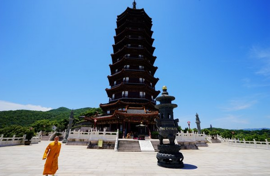
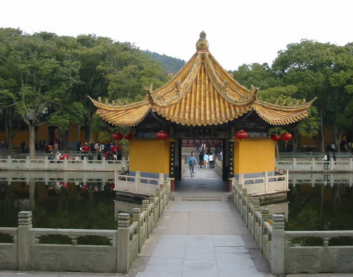

详细类容
宁波旅游景点舟山 舟山普陀山二日游攻略
舟山普陀山作为四大佛教名山之一，是一个能让你的心清静下来的地方。如果哪一天你感到累了，想找个地方散散心，那就来普陀山吧。下面为你推荐舟山普陀山二日游攻略，让你玩得全面。

洛伽山也是普陀山的一部分，如果是来烧香拜佛的，那一定要去(64元，18元门票+46元往返船票)，可以放弃掉千步沙、观海亭、百步沙、朝阳洞、瞻日阁等风景为主的景点。如果主要是旅行看风景，那珞珈山没有风景，直接放弃。
普陀山的行程安排两天最合适，因为门票正好管两天(48小时)。两天行程可以有很多种组合，都差不太多，主要就是坐车顺序和用餐时间安排好。

普陀山二日游攻略：第一天
上岛时间要早，否则赶不上慧济寺上午10:30的斋饭。在码头旁边的停车场坐景区车去佛顶山索道下站(10元)，这是码头坐景区车所能直达的最远的地方，这里有宝陀讲寺和普门万佛宝塔，景色绝佳。而且可以从这里坐索道上佛顶山(佛顶山也可以从法雨寺步行上山，再原路返回，但是耗费体力，走回头路，不如看了宝陀讲寺和万佛宝塔后坐索道上山，再徒步下山游览法雨寺，比较合理)。快到终点一两公里公里时，一定要和司机说古佛洞下车，这地方非常不错，值得一游，详见后文。游览完古佛洞后只能步行前往宝陀讲寺，好在路边有游览栈道，景色绝佳，而且这里有个非常漂亮的隐秘景点，天竺水库。宝陀讲寺游览完后走侧门来到普门万佛宝塔脚下的登山台阶，这里是一定要上去的，因为万佛宝塔所在的山坡位置绝佳，风光无限。